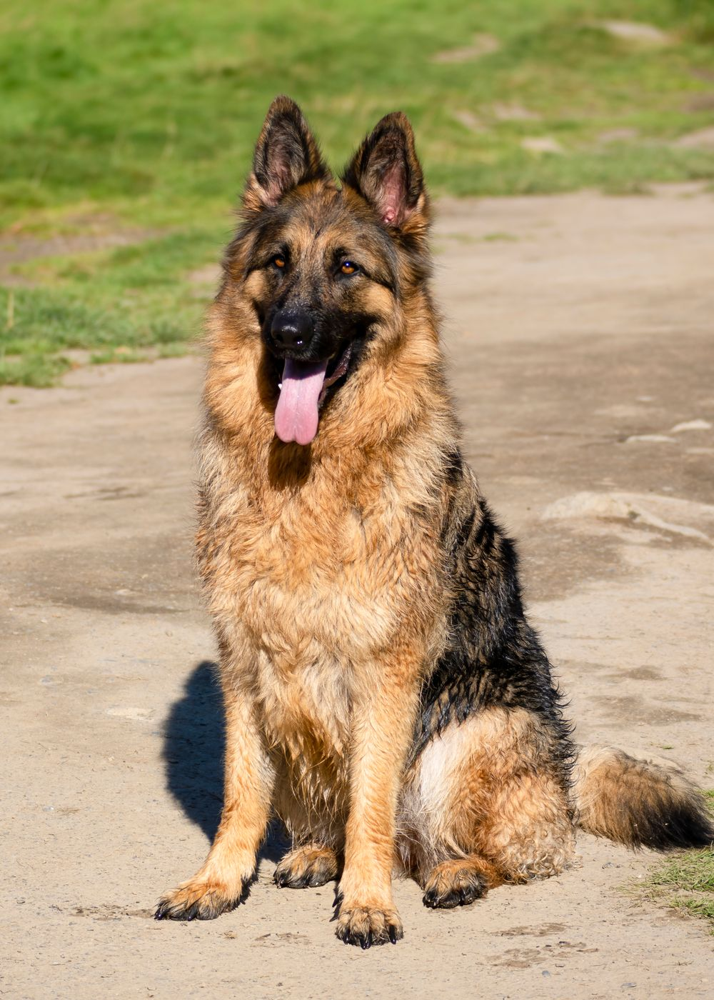
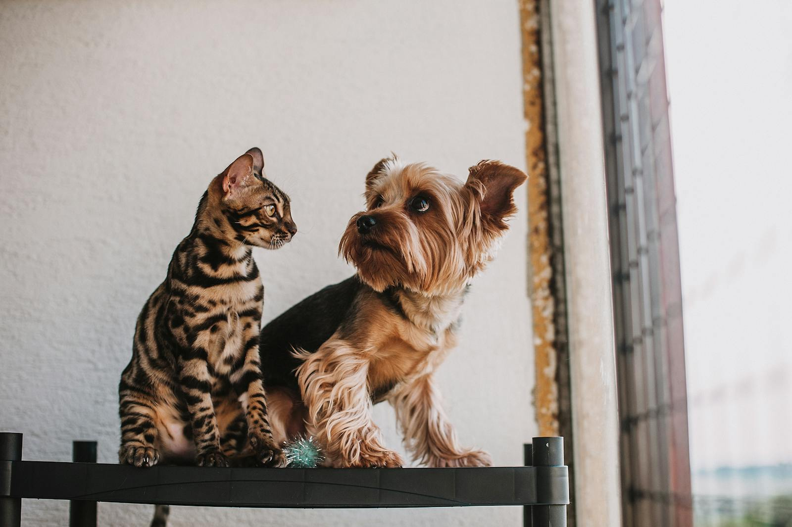
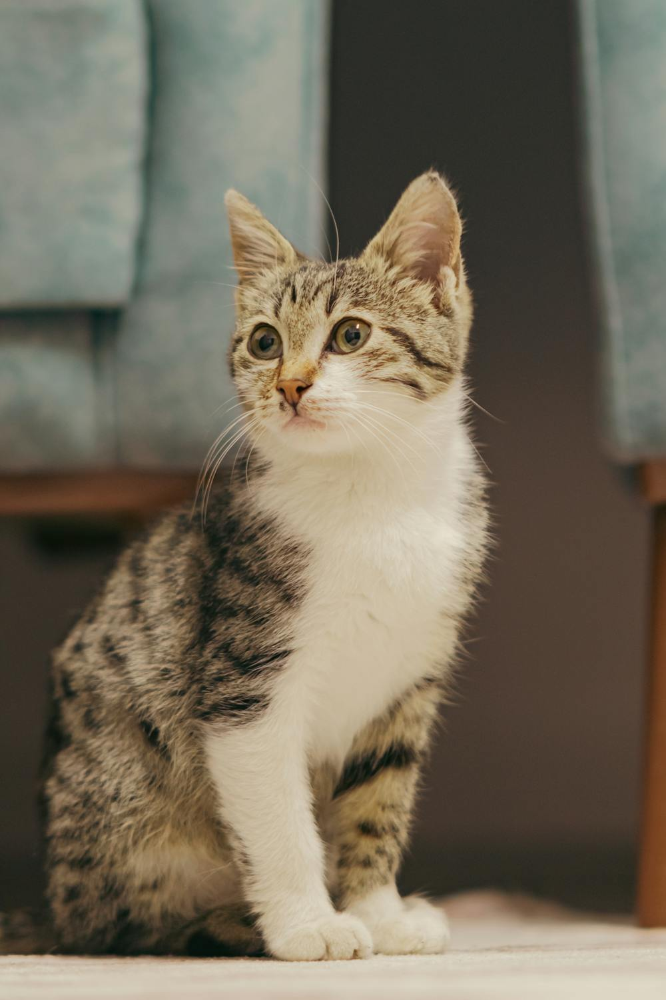
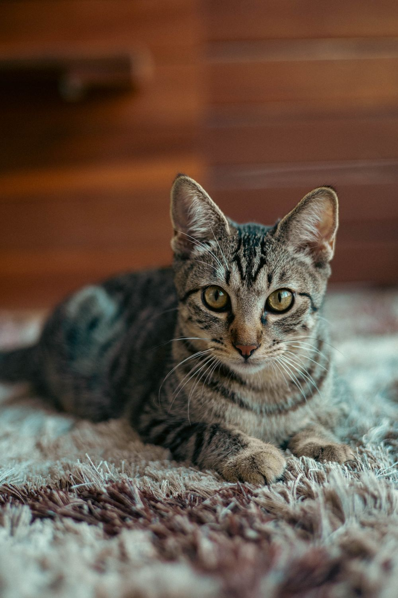
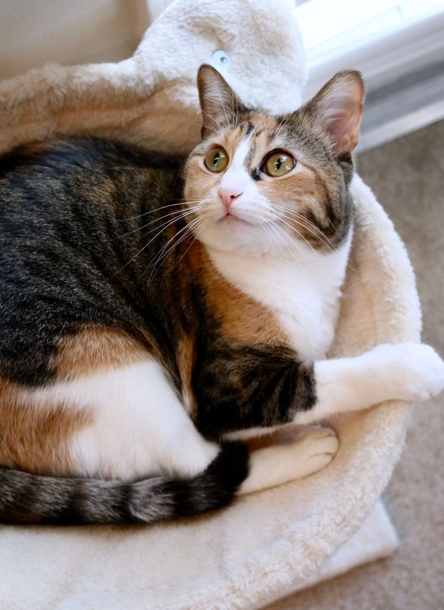
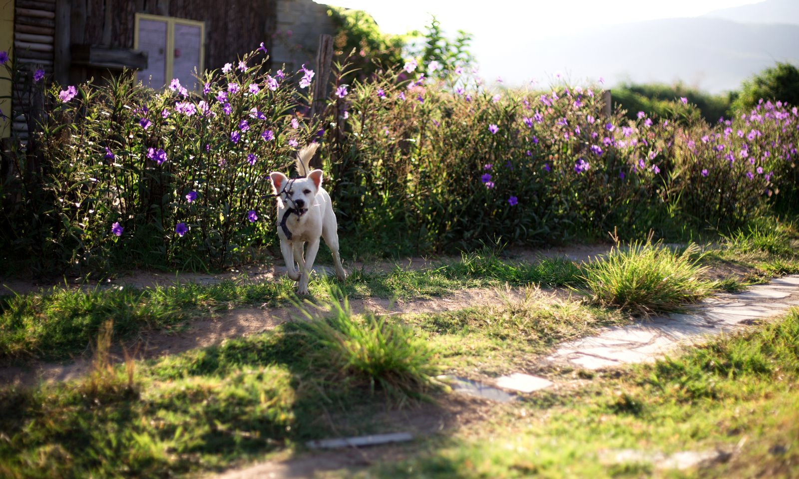
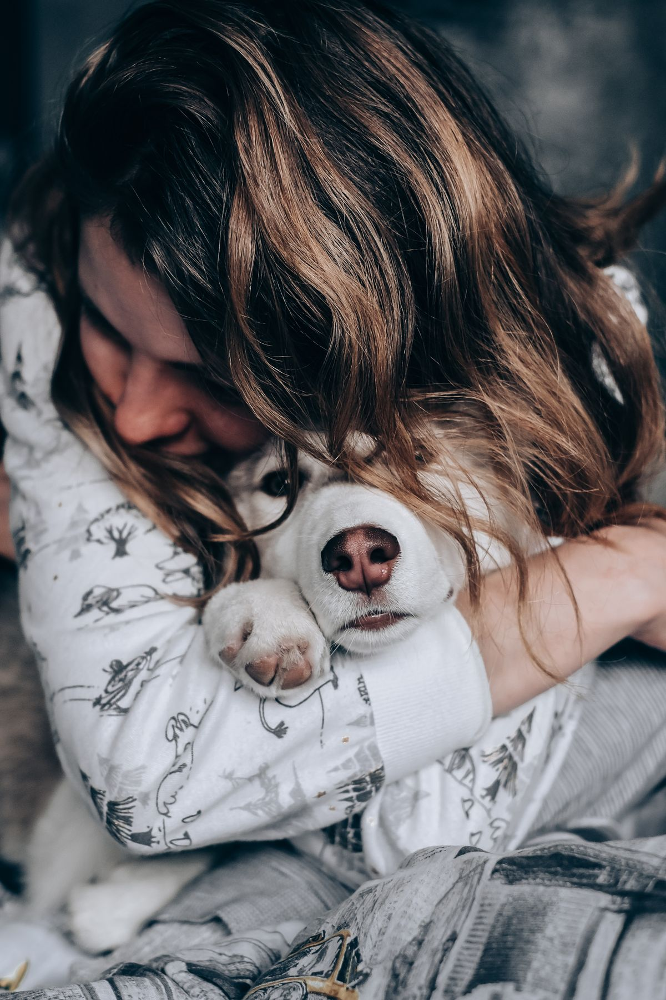
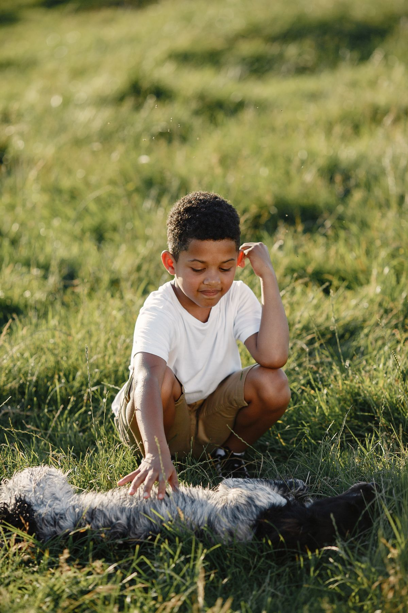
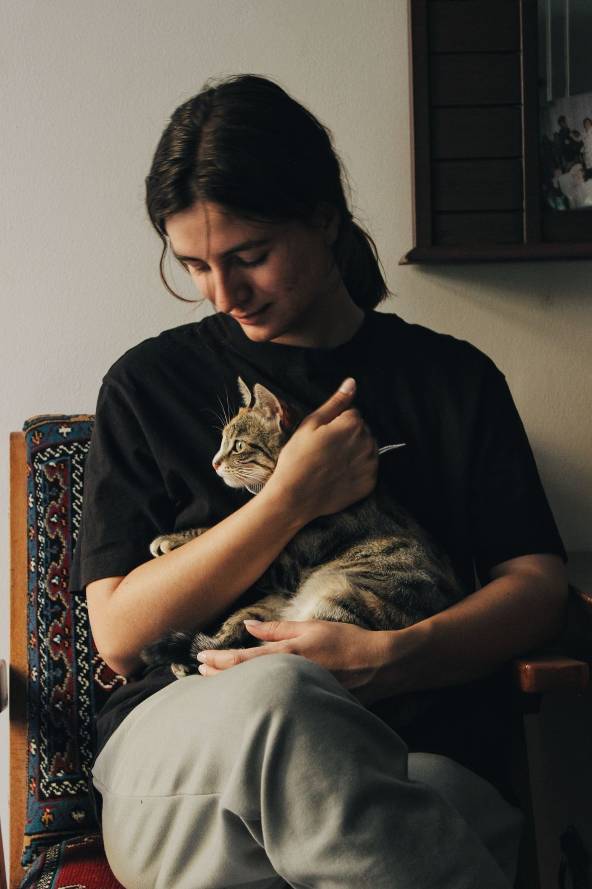
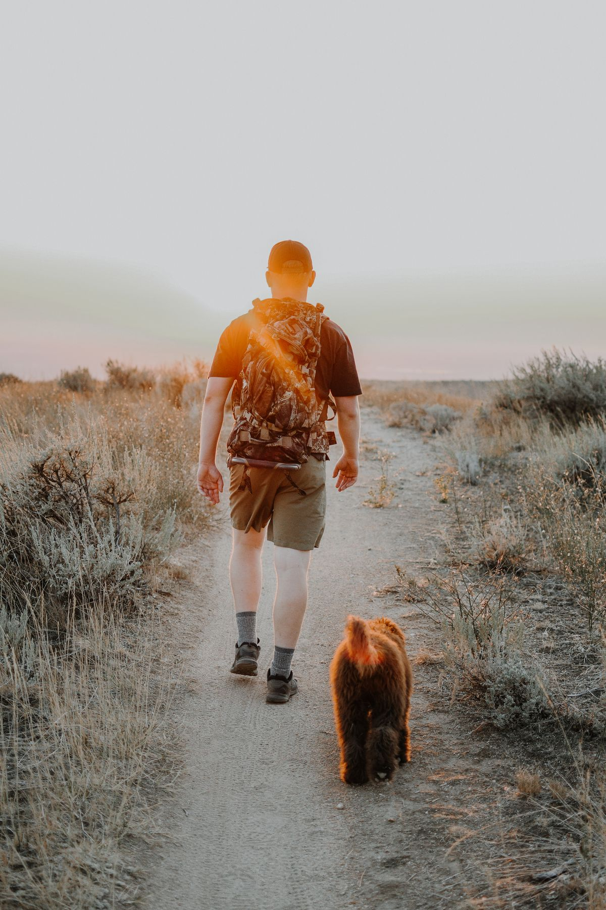

Wellness & Preventive Care
The exams, vaccines, and screenings that catch small problems before they become big ones. We build personalized plans around your pet's age, breed, and life.
Explore wellness care →Noah's Ark is Williamsburg's independently owned animal hospital where you're a familiar face, not a number.
Noah's Ark has been part of Williamsburg for four decades. Dr. Sean Sparkman took ownership in 2014 and has kept it purposefully independent ever since. Independence buys one thing he wasn't willing to give up: time. Time to know a pet, time to answer a question, time to do things right.
That shows up in ways you notice — and ways you don't. A team that remembers your cat's name and your last conversation. Doctors who ask about your family, not just your dog's symptoms. Care built around your pet and your budget, never a corporate script.
We're AAHA-accredited, which holds us to the highest medical standards — something only a small group of veterinary practices achieve. But what keeps families coming back year after year isn't a plaque on the wall. It's the welcome you feel the minute you walk in.

Noah's Ark is a full-service animal hospital, which means most of what your dog or cat needs throughout their life can be done by a team who already knows them.

The exams, vaccines, and screenings that catch small problems before they become big ones. We build personalized plans around your pet's age, breed, and life.
Explore wellness care →
Most dental disease hides below the gumline, where you'd never spot it. Under anesthesia, we x-ray, clean, and remove problem teeth so your pet's mouth is pain-free.
Explore dental care →
From spays and neuters to soft-tissue procedures, your pet is monitored closely from start to finish by an experienced team.
Explore surgery →
Digital x-ray, ultrasound, and in-house lab work help us find answers in hours, not days. When something's wrong, we don't make you go somewhere else to find out why.
Explore diagnostics →When something comes up and your pet needs to be seen today, call us. We always keep room in the schedule for the days that don't go as planned.
Explore urgent care →
Older pets need close attention to feel their best. We work with you to prioritize comfort as your dog or cat ages, so their later years stay good ones.
Explore senior care →
For your pet, for your family, and for each other. It's why someone carries your cat's crate in, why we ask about the whole family and not just the symptoms, and why we give the hardest goodbyes the time and gentleness they deserve.

This is a team that likes being here, likes working with each other, and likes working with you. You'll feel it in every interaction, even on the tough days.

We're AAHA-accredited, which means we're graded against strict national standards and inspected to prove we meet them. When you're trusted with animals' lives, that rigor is the difference between done and done well.

If there's a problem, we keep investigating until we have answers. Your pet's health isn't something we take lightly.
You'll find us on Richmond Road, on the west side of Williamsburg, Virginia, toward Richmond. We care for pets across Williamsburg, Norge, Toano, New Kent, and Barhamsville, and for the travelers whose dogs and cats need a vet while they're visiting the area. Wherever you're driving from, the welcome's the same.
Start with the things that shape your pet's care for years, not just one visit. Is the practice accredited? Is it independently owned, so your veterinarian, not a corporate office, drives the decisions? Will they take the time to know your pet and explain what they see? And can you build a relationship with a consistent team? Noah's Ark is AAHA-accredited and has been independently owned in Williamsburg since 1983, with a team that gets to know your pet and your family. Those are the things that tend to matter most once the newness of a first visit wears off.
It means your pet's care is measured against a national standard most practices don't meet. AAHA accreditation comes from the American Animal Hospital Association, and only a small share of U.S. veterinary practices earn it. To stay accredited, Noah's Ark is evaluated against roughly 900 standards covering anesthesia safety, pain management, surgery, sanitation, and recordkeeping, and we're inspected to prove we meet them. For you, it's independent assurance that the care here is held to a high, consistent standard.
Noah's Ark is a small-animal hospital, so we care for dogs and cats through every stage of life, from first puppy and kitten visits to senior care.
Yes. We keep room in our daily schedule for pets who need to be seen that day, so if something comes up, call us as early as you can and we'll do our best to fit you in. Noah's Ark isn't a 24-hour emergency hospital, so for overnight or after-hours emergencies, we'll point you to the nearest emergency clinic.
Yes, Noah's Ark is accepting new clients. You can request an appointment through the form on this site or by calling us, and our front desk will follow up to confirm a time that works for you. If your pet has seen another veterinarian, we'll help transfer their records so we start with the full picture.
Noah's Ark is on Richmond Road in Williamsburg, VA, on the west side of town toward Richmond, serving Williamsburg, Norge, Toano, New Kent, and Barhamsville. We're open Monday through Friday from 7:30 a.m. to 6:00 p.m., Saturday from 7:30 a.m. to noon, and closed Sunday.
At an independently owned hospital, the people caring for your pet are the same people who run it, so decisions are driven by medicine and relationships, not a private equity playbook. In practice, that often means more continuity, more time with your veterinarian, and recommendations built around your pet rather than a standardized schedule. Noah's Ark has been independently owned since 1983, and Dr. Sean Sparkman keeps it that way on purpose, which is a big part of why pet families stay with us.
Whether it's a first puppy visit or a lifetime of care, we'd love to meet you. Request an appointment and our front desk will be in touch to find a time that works.